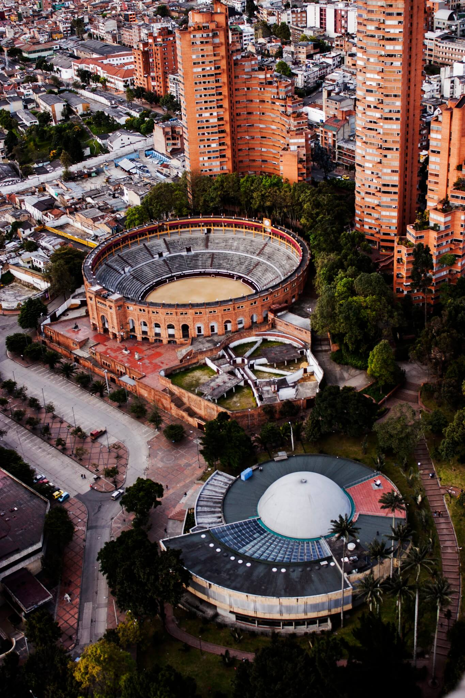
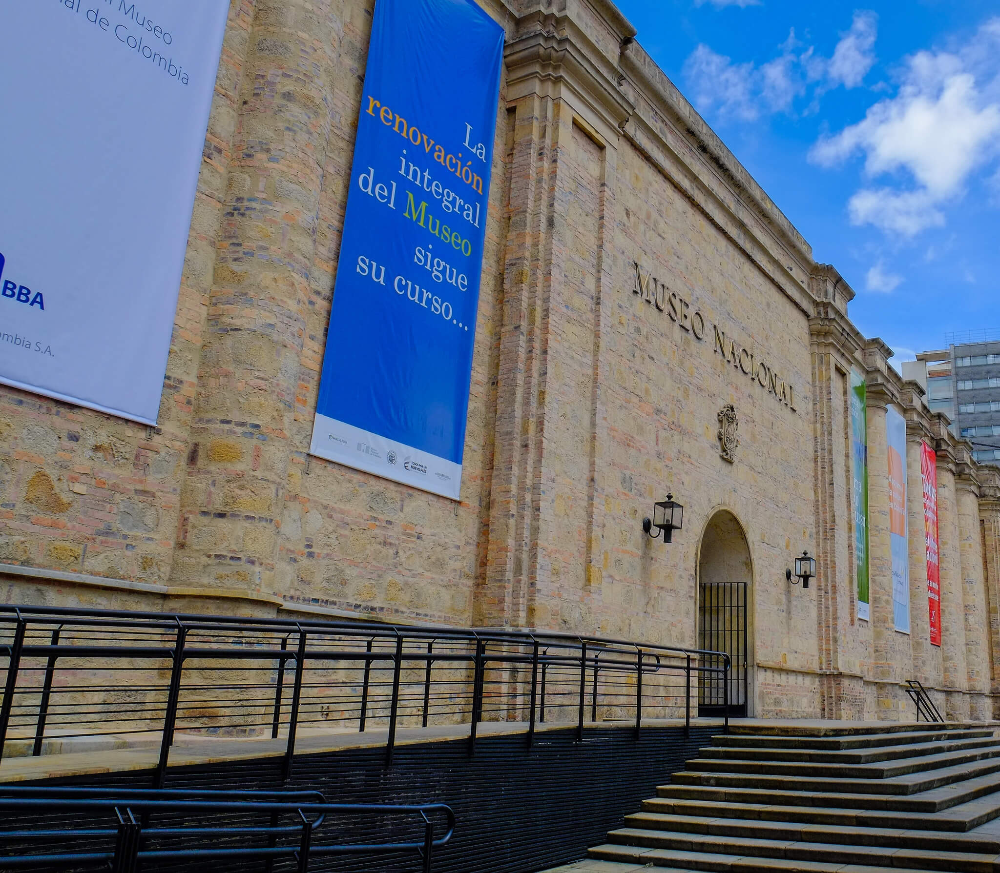
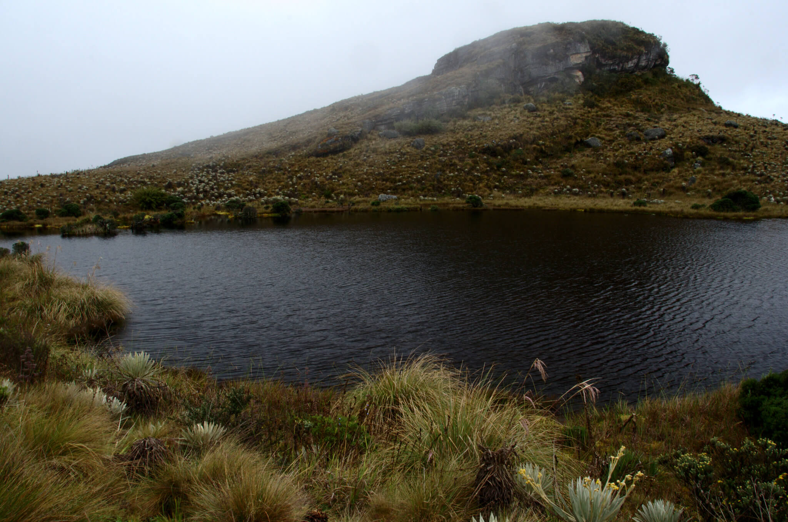
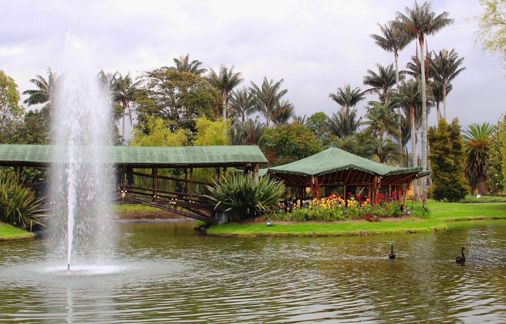
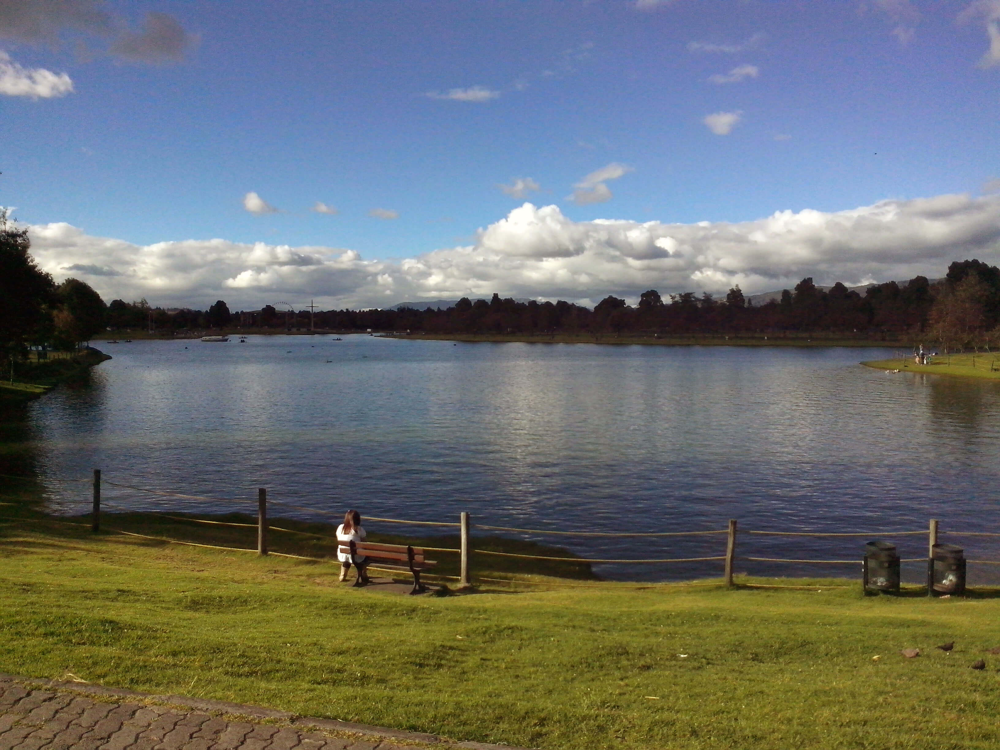
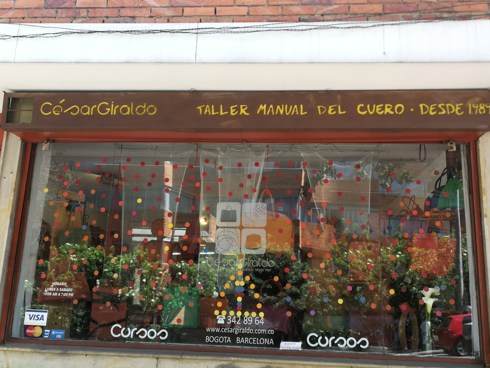
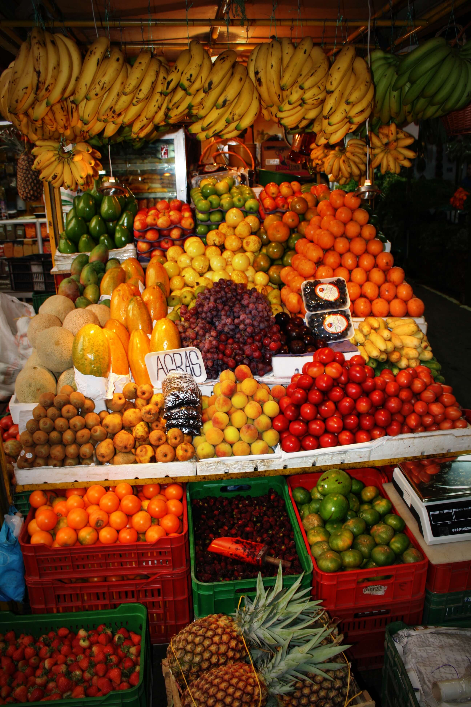

Sitios de interés
Bogotá es una ciudad de más de 10 millones de habitantes y seguro que tiene algo para conquistarte.
Acá te presento algunas opciones.
Cultura
Bogotá tiene innumerables opciones para locales y visitantes. Si te consideras un apasionado de la cultura, un amante de la naturaleza, un entusiasta de las compras o un ávido foodie, ¡acá te muestro algunas opciones!.

Orfebería, cerámica y una mirada al patrimonio y la identidad cultural de Colombia.

Conoce el Planetario De Bogotá. Aprende de astronomía o disfruta de sus talleres y eventos.

El que antes era un panóptico es ahora la casa de innumerables obras y objetos del patrimonio e historia de Colombia. Visita su colección permanente o sus exposiciones temporales.
Naturaleza
En Bogotá hay verdaderos paraísos naturales. Disfruta de sus montañas y zonas verdes.

Conoce el Páramo de Sumapaz. Una de las "fábricas" de agua más grandes del mundo.

Disfruta, en medio del ajetreo de la ciudad, de un oasis con miles de plantas endémicas y exóticas.

Un parque que se considera un pulmón de la ciudad y que es sede de decenas de festivales y eventos queridos por sus habitantes.
Compras
Si te apasionan la moda y las artesanías, en Bogotá encontrarás cientos de opciones.

El Taller Manual del Cuero, fundado por César Giraldo, es un atélier de marroquinería que se precia de sus procesos manuales.

Una propuesta de moda que busca integrar a desmovilizados reincorporados en la vida civil en el marco del Acuerdo de Paz del 2016.

Conoce uno de los primeros centros comerciales de la ciudad. Ubicado en el centro el favorito para comprar recuerdos y artesanías típicas del país.
Experiencias gastronómicas
En Bogotá hay miles de opciones para explorar los sabores colombianos y del mundo.

La Plaza de Paloquemao es un mercado en el que puedes descubrir los sabores de Colombia.

Una mirada contemporánea que pretende rescatar la gastronomía típica del país.

Cafés de especialidad. Una de las propuestas que quieren desarrollar una verdadera cultura cafetera en Colombia.
Consulta las atribuciones y licencias de los recursos utilizados.
Acá te dejo la ubicación de todos estos lugares.